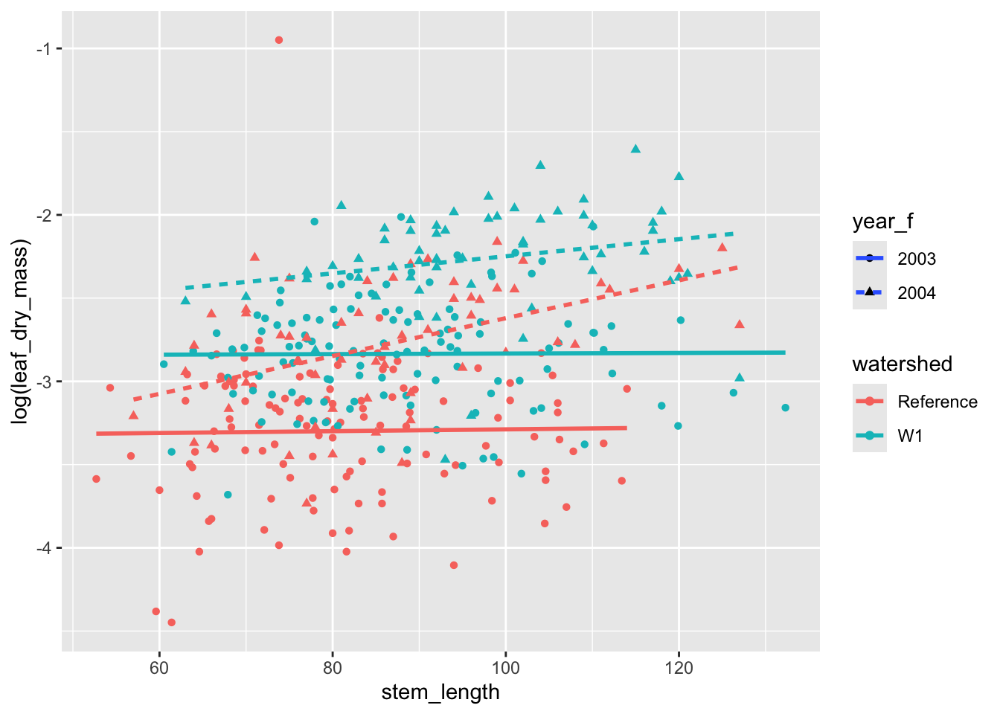

One of R’s major strengths is in data visualization (i.e., plotting data). The most widely used data visualization package in the R community is ggplot2, which is part of tidyverse. Today’s lab is all about data visualization.
ggplot2 basics
The grammar of plotting
Hadley Wickham (2009) is the author of ggplot2 and designed the package to follow The Grammar of Graphics by Wilkinson (2005).
In brief, the grammar tells us that a graphic maps the data to the aesthetic attributes (colour, shape, size) of geometric objects (points, lines, bars). Wickham (2015).
There is some vocabulary to go over.
(Your notes below)
Aesthetics:
Geometric elements (or geoms):
Layers:
Scales:
Facets:
Coordinate systems:
ggplot2 syntax
Data are mapped to aesthetics using the aes() function. Aesthetics that can be specified using aes() include:
Position arguments: x, y, xmin, xmax, etc,
Color arguments: colour, fill, alpha
Shape and size arguments: shape, size, linetype, linewidth
Grouping argument: group
Geometric elements are added through the geom_ family of functions. Examples include (but see a full list here):
geom_point()
geom_line()
geom_boxplot()
Layers are added by placing as plus sign + between geometric elements.
Facetting can be done using the facet_wrap() and facet_grid() functions.
Scales can be changes using the family of scale_ functions, including
scale_y_continuous()
scale_color_manual()
Coordinate systems can be changed using the coord_ family of functions, including
coord_cartesian()
coord_polar()
coord_flip()
Finally, themes can be adjusted for the overall appearance of the graphic using theme() and its many (many) arguments.
ggplot2 practice (the best way to learn)
Let’s load some data to play with. For this, we will use data that are available through the lterdatasampler package in R.
── Conflicts ────────────────────────────────────────── tidyverse_conflicts() ──
✖ dplyr::filter() masks stats::filter()
✖ dplyr::lag() masks stats::lag()
ℹ Use the conflicted package (<http://conflicted.r-lib.org/>) to force all conflicts to become errors
luq_streamchem <- lterdatasampler::luq_streamchem
A simple scatter plot
We can start simple with these data and create a x-y scatterplot to investigate the relationship between variables of interest.
The first step is to establish a default ggplot object. This is done through the ggplot() function and letting it know where the data will be coming from.
na_v_k <-ggplot(data = luq_streamchem)
Now, let’s add a layer. Recall that each layer is made up of aesthetic mappings, mapping data to aesthetics, each of which has its own scale, a geometric element, and any statistical transformations that need to be performed on the data prior to the mapping. This information is supplied through the geom_ family of functions, in combination with aes().
na_v_k <- na_v_k +geom_point(aes(x = na, y = k))na_v_k
Warning: Removed 9 rows containing missing values or values outside the scale range
(`geom_point()`).
Alternatively, we can combine these two steps into one with
Warning: Removed 9 rows containing missing values or values outside the scale range
(`geom_point()`).
In the above code block, we specify a global aesthetic mapping by putting the aes() call inside the ggplot() function rather than specific to a layer. This allows us to add additional layers, all using the same aesthetic mappings. For example,
na_v_k +geom_point(colour ="white", size =0.75)
Warning: Removed 9 rows containing missing values or values outside the scale range
(`geom_point()`).
Removed 9 rows containing missing values or values outside the scale range
(`geom_point()`).
Note
Note how we can set fixed aesthetics inside the geom_ function without needing to wrap them in aes(). If we want these aesthetics to encode information from the data, we need to map data to the aesthetics using aes(). We will see many examples of this soon.
Figures for distributions
Another useful type of plot is a histogram or density plot (a smoothed version of a histogram). Histograms are easy to plot in base R, but let’s also see how to plot them in using ggplot2(). While ggplot2() requires more typing to create a histogram, it makes creating a density plot easier than with base R (in my opinion).
`stat_bin()` using `bins = 30`. Pick better value with `binwidth`.
Warning: Removed 3 rows containing non-finite outside the scale range
(`stat_bin()`).
Note
Note how we don’t need a y position aesthetic for a histogram, since that is actually implied by the statistical transformation component of the layer, which specifies that we want the count of the number of observations that fall within a given bin.
We can create a density plot in a similar fashion.
Warning: Removed 3 rows containing non-finite outside the scale range
(`stat_density()`).
Your Turn
Try changing the fill, color, and alpha aesthetics for a histogram as well.
ü§î What is the difference between fill and color for a these distribution plots?
Answer
fill changes the color of the middle of the geometry while color changes the outline of the geometry.
Figures comparing groups
Let’s compare some groups of sugar maple seedlings in Hubbard Brook Experimental Forest, some growing in sites treated with supplemental calcium, others growing in reference sites. Sites were sampled in two years, 2003 and 2004.
# first, load the datadata(hbr_maples)
Boxplots
Let’s first use a box-plot to investigate seedling height as it varies by treatment group using a boxplot.
ggplot(data = hbr_maples, aes(x = watershed, y = stem_length)) +geom_boxplot()
Here, we are comparing all seedlings from each watershed type from each year, but it might be interesting to see if there is year-to-year variation as well.
ü§î How might we ‚Äúadd‚Äù year to the plot such that we can compare the distribution of stem lengths across treatment types and year in the same plot?
Answer
One option would be to map year to a color or fill aesthetic. Another might be to facet by year.
# the first thing we should do is check that `year` is treated# as a categorical variablehbr_maples %>%pull(year) %>%class()
[1] "numeric"
# convert to a factorhbr_maples <- hbr_maples %>%mutate(year_f =as.factor(year))
Above we converted year to a factor because we noticed it was loaded as numeric, but let’s just see the type of warning message you will encounter if you forget to do something like this in the future.
# example supplying numeric to a grouping factorggplot(data = hbr_maples, aes(watershed, stem_length, color = year)) +geom_boxplot()
Warning: The following aesthetics were dropped during statistical transformation:
colour.
ℹ This can happen when ggplot fails to infer the correct grouping structure in
the data.
ℹ Did you forget to specify a `group` aesthetic or to convert a numerical
variable into a factor?
# correctly supplying a factorsl_box <-ggplot(data = hbr_maples, aes(watershed, stem_length, color = year_f)) +geom_boxplot()sl_box
Let’s add another layer to this plot to show where the actual data fall along the y-axis. This can be accomplished with geom_jitter(), which jitters points along the x-axis so that they don’t overlap in one line up and down the y-axis.
The above plot gets into adjusting the position aesthetic. Under the hood, geom_boxplot() used position_dodge() so that the boxplots for two years but the same treatment were not overlapping one another. We needed to match this position aesthetic when we added points to the plot, but we also wanted to add jitter to the position to so that the points are not all on top of one another.
Density plots
We can also use density plot to compare distributions of the two treatment groups.
ggplot(hbr_maples, aes(x = stem_length, fill = watershed)) +geom_density(alpha =0.5)
Your Turn
ü§î How might we also add the year information to this plot?
Answer
One option in this case would be to facet by either year or watershed.
A commonly used plot in the literature is called a pointrange plot in ggplot2(). For these plots, we want to plot a point estimate for each group (e.g., the mean) as well as error bars around that point. First, we need to do some data wrangling. Let’s summarize the data by treatment and year groups and compute the mean and standard error of stem length for each group.
# first get some summarieshbr_sl_sum <- hbr_maples %>%group_by(year_f, watershed) %>%summarise(mean =mean(stem_length),se =sd(stem_length) /sqrt(n()),.groups ="drop" )hbr_sl_sum
# now create the plotggplot(hbr_sl_sum) +geom_pointrange(aes(x = watershed,y = mean,ymin = mean - se,ymax = mean + se,color = year_f ),position =position_dodge(width =0.2) )
Alternatively, we could do a barplot with error bars.
Note
Note that geom_bar() counts the number of observations within a given category by default, while geom_col() allows you to map data to the height of a column.
# set global aestheticsggplot(hbr_sl_sum, aes(x = watershed, y = mean, fill = year_f)) +# add column layergeom_col(position =position_dodge(width =0.5),width =0.3 ) +# add some error barsgeom_errorbar(aes(ymin = mean - se, ymax = mean + se),position =position_dodge(width =0.5),# this width adjusts the horizontal lines on the errorbarswidth =0.1 )
As an alternative, we could add a statistical transformation to a bar layer where we override the default statistic and change it to be the mean. We then add a summary statistic layer where we specify the geometry as errorbar and use a ggplot2 function called mean_se() to compute the mean plus or minus one standard error.
ggplot(hbr_maples, aes(x = watershed, y = stem_length, fill = year_f)) +# geom bar with mean as the fun argumentgeom_bar(stat ="summary", fun = mean, width =0.3,position =position_dodge(width =0.5) ) +# add a statistical summary layerstat_summary(geom ="errorbar",fun.data = mean_se,position =position_dodge(width =0.5),width =0.1 )
Line plots and time series
Let’s first continue working with the maple seedling data and investigate the relationship between seedling height (stem_length) and leaf area and whether that differs by treatment type.
ggplot( hbr_maples, aes(stem_length, corrected_leaf_area, color = watershed)) +geom_point()
Warning: Removed 119 rows containing missing values or values outside the scale range
(`geom_point()`).
Perhaps we should also keep with our approach of looking at variation across years as well as treatments.
Your Turn
:thinking_face: Provide two aesthetics we could map year to in order to display another axis of variation on the above scatter plot.
Answer
One option would be to use different shapes for the points from different years. Another option would be to facet by year.
ggplot( hbr_maples, aes(stem_length, leaf_dry_mass, color = watershed)) +geom_point(aes(shape = year_f))
We can apply transformations to data insideggplot() calls. To illustrate this and to stabilize the mean-variance relationship between these two variables, let’s log-transform the leaf_dry_mass measurements.
ggplot( hbr_maples, aes(stem_length, log(leaf_dry_mass), color = watershed)) +geom_point(aes(shape = year_f))
Let’s also see how to add trend lines and smooths to the figure. This can be accomplished with the geom_smooth() function. The default uses a loess smoother, but a simple trend line looks appropriate to me here. To do that, we can set method = "lm".
ggplot( hbr_maples, aes(stem_length, log(leaf_dry_mass), color = watershed)) +geom_point(aes(shape = year_f)) +# add a layer for a smoothergeom_smooth(aes(linetype = year_f), method ="lm")
`geom_smooth()` using formula = 'y ~ x'
An important note here is that, while we get what look to be confidence bands with these figures, we should almost never use these in a publication graphic. These confidence bands come with a number of standard assumptions, but we have not checked them! It is always safer to provide your own confidence bands that come from rigorous model fitting and checking. This can be done with geom_ribbon(). So, let’s remove those from the plot.
ggplot( hbr_maples, aes(stem_length, log(leaf_dry_mass), color = watershed)) +geom_point(aes(shape = year_f)) +# add a layer for a smoothergeom_smooth(aes(linetype = year_f), method ="lm", se =FALSE)
`geom_smooth()` using formula = 'y ~ x'

data("and_vertebrates")
As a final example, let’s plot the number of cutthroat trout caught in different reaches of Mack Creek in the H. J. Andrews Experimental forest from 1987 to 2019.
verts_ts <-filter(and_counts, species !="Cascade torrent salamander") %>%ggplot(., aes(x = year, y = count, color = species)) +facet_wrap(vars(sitecode), ncol =1) +geom_line() +geom_point()verts_ts
Customizing the appearance
To change the general appearance of the figures (background colors, grid lines, legend, etc.), we can change the theme. There are a handful of pre-made themes available, which you can view using ?ggplot2::theme_grey(), which is the default. Out of these, I prefer theme_classic() or theme_bw() as a starting point. You can then adjust any of the them elements inside the theme() function.
(verts_ts <- verts_ts +theme_bw())
That looks better than the grey background in my opinion, but what if we didn’t want the gridlines in the background? This is something we can change with theme(). For a full list of elements you can modify with theme(), see the documentation with ?ggplot2::theme().
# Remove minor gridlines(verts_ts <- verts_ts +theme(panel.grid.minor =element_blank() ))
Let’s also make the major vertical gridlines a bit darker.
While aesthetics that are not related to data can be adjusted with theme(), if data are mapped to an aesthetic, we have to change the scale for that aesthetic in order to change its appearance. For example,
Color blindness: Are your colors color-blind friendly?
Business/ease of interpretation: While figures with lots going on can be pretty to look at, is a busy figure the best way to convey the information you want readers to understand?